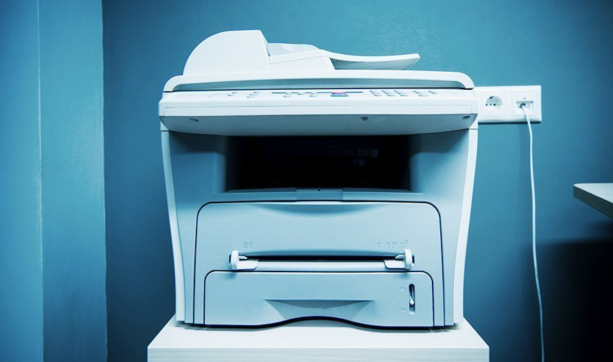

What is a printer?
A printer is a device that accepts text and graphic output from a computer and transfers the information to paper, usually to standard-size, 8.5" by 11" sheets of paper. Printers vary in size, speed, sophistication and cost. In general, more expensive printers are used for more frequent printing or high-resolution color printing.
Personal computer printers can be distinguished as impact or non-impact printers. Early impact printers worked something like an automatic typewriter, with a key striking an inked impression on paper for each printed character. The dot matrix printer, an impact printer that strikes the paper a line at a time, was a popular low-cost option.
The best-known non-impact printers are the inkjet printer and the laser printer. The inkjet sprays ink from an ink cartridge at very close range to the paper as it rolls by, while the laser printer uses a laser beam reflected from a mirror to attract ink (called toner) to selected paper areas as a sheet rolls over a drum.
Different types of printers
There are many different printer manufacturers available today, including Canon, Epson, Hewlett-Packard, Xerox and Lexmark, among many others. There are also several types of printers to choose from, which we'll explore below.
Inkjet printers recreate a digital image by spraying ink onto paper. These are the most common type of personal printer.
Laster printers are used to create high-quality prints by passing a laser beam at a high speed over a negatively charged drum to define an image. Color laser printers are more often found in professional settings.
3D printers are a relatively new printer technology. 3D printing creates a physical object from a digital file. It works by adding layer upon layer of material until the print job is complete and the object is whole.
Thermal printers produce an image on paper by passing paper with a thermochromic coating over a print head comprised of electrically heated elements and produces an image in the area where the heated coating turns black. A dye-sublimation printer is a form of thermal printing technology that uses heat to transfer dye onto materials.
All-in-one printers are multifunction devices that combine printing with other technologies such as a copier, scanner and/or fax machine.
LED printers are similar to laser printers but use a light-emitting diode array in the print head instead of a laser.
Photo printers are similar to inkjet printers but are designed specifically to print high-quality photos, which require a lot of ink and special paper to ensure the ink doesn't smear.
Features to look for in a printer
The four printer qualities of most interest to users are:
Color: Most modern printers offer color printing. However, they can also be set to print in black and white. Color printers are more expensive to operate since they use two ink cartridges -- one color and one black ink -- or toners that need to be replaced after a certain number of pages are printed. Printing ink cartridges or toner cartridges are comprised of black, cyan, magenta and yellow ink. The ink can be mixed together, or it may come in separate monochrome solid ink printer cartridges, depending on the type of printer.
Resolution: Printer resolution -- the sharpness of text and images on paper -- is usually measured in dots per inch (dpi). Most inexpensive printers provide sufficient resolution for most purposes at 600 dpi.
Speed: If a user does a lot of printing, printing speed is an important feature. Inexpensive printers print only about 3 to 6 sheets per minute. However, faster printing speeds are an option with a more sophisticated, expensive printer.
Memory: Most printers come with a small amount of memory -- typically 2-16 megabytes- that can be expanded by the user. Having more than the minimum amount of memory is helpful and faster when printing out pages with large images.

Printer I/O interfaces
The most common I/O interface for printers had been the parallel Centronics interface with a 36-pin plug.
Nowadays, however, printers and computers are likely to use a serial interface, especially a USB or FireWire with smaller and less cumbersome plugs.